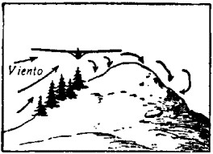
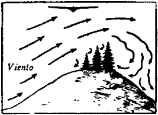
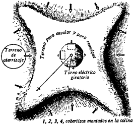
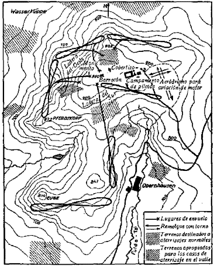
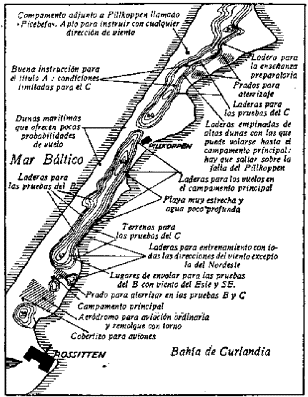
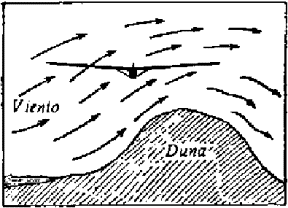
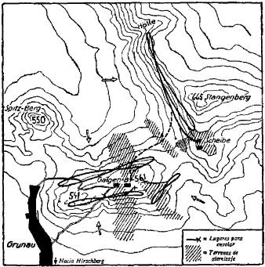
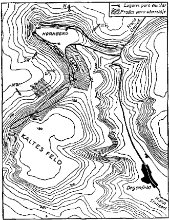

Manual del Vuelo a Vela
Wolf Hirth
1942
Campo de vuelo a vela
por WOLF HIRTH
Uno de los puntos esenciales en los que la aviación sin motor se diferencia de la aviación ordinaria de motor es el aeródromo o campo de vuelos. El aeródromo ordinario es casi siempre una zona llana de prado o pastos, en la cual las condiciones de partida y aterrizaje, en sus grandes rasgos, siempre son las mismas, habiendo diferencia solamente en lo tocante a los alrededores, en relación con la actividad del tráfico. En el campo de vuelo a vela la cosa es completamente diferente, pues cada uno tiene una forma completamente distinta y por esta razón nunca se puede comparar un campo con otro. Para dar idea de lo que es un campo de vuelos nos fijaremos en un par de ellos de los más conocidos y así, en honor a los jóvenes pilotos de velero, que son los que yo me imagino como lectores de este libro, se describirán a continuación los campos de la Wasserkuppe del Rhön; Rossitten, como campo típico de dunas; Grunau en los Montes Gigantes; el Hornberg en la región de Suabia, y Elmira en los Estados Unidos.
Yo mismo aconsejo a los jóvenes pilotos que no hagan sus cursos todos en la misma escuela, sino que alternen entre todas siempre que les sea posible. Un vuelo en una nueva ladera enriquece su experiencia y les sirve para mucho, después en los vuelos de distancia, o para los casos en que se vean obligados a emitir juicio sobre una comarca enteramente desconocida. Un piloto de velero perfecto debe tener la costumbre no sólo de pensar en el vuelo a vela a la vista de una nube o de una corriente de aire como si fuese a utilizarlos, sino que cualquier montaña la debe mirar como de su propiedad, en cuanto al vuelo orográfico sobre ella. Naturalmente que hay que distinguir entre terrenos para principiantes, terrenos para perfeccionamiento y terrenos para los que son ya maestros en el vuelo, como, por ejemplo, los escarpados u otros terrenos análogos.
Quien un día ha sido enviado a un país extranjero para volar a vela, donde se ofrezca, y quizá en circunstancias difíciles, como a mí mismo me ha sucedido hace muchos años, pensará que un terreno puede mejorarse por medio de obras de la actividad humana. Esto se puede conseguir haciendo, por ejemplo, un gran cobertizo en el hueco entre dos montañas o colinas, que entonces podrá servir de productor de ascendencias, o construyendo terraplenes, si no los hay, en los lugares en donde el viento puede penetrar con toda facilidad, o bien, lo que hasta ahora es solamente un castillo en el aire, construir un « valle-barrera del viento ». Sin llegar a estos sueños, siempre es posible con gastos relativamente pequeños, hacer mejoras de importancia. Tal ocurrió un día cuando se quiso hacer vuelos a vela en una playa en La Florida, que yo propuse hacer una ladera artificial por medio de setos cerrados con tablas altas montadas sobre ruedas que se pudiesen poner siempre exactamente contra el viento. La propuesta no pudo entonces ser llevada a cabo, pero seguramente habría tenido éxito (Fig. 129 y 130).
 |
 |
Fig. 129. Ladera con árboles en situación desfavorable para producir ascendencia |
Fig. 130. Mejora del terreno de vuelos por una plantación de árboles conveniente |
Un plan fantástico, pero que en tiempos futuros puede llegar a ser realidad, es hacer, terraplenando, una colina artificial para el vuelo a vela. Esta idea la tuve cuando extendí la vista desde nuestro campo de vuelos, en Nueva York, el año 1930, pensando en que amontonando el cascote que saliera de esa gran ciudad en una isla delante de la costa del Norte se formaría una gigantesca colina con laderas muy a propósito para volar a vela. A la vista de la figura 131 cualquiera puede imaginarse la actividad de vuelo que se podría desarrollar en un campo de esas condiciones.
En el corazón de Alemania, rodeado de las cadenas de las montañas Vogelberg, Spessart y el bosque de Turingia, se eleva el Rhön, en la Wasserkuppe, con la altura máxima de 950 m. Aquí, en los manantiales del Fulda y del Saale, en el país limítrofe entre Baviera, Hesse, Turingia y Prusia es en donde tuvo su cuna el vuelo sin motor; aquí es donde se ensayaron y mejoraron las experiencias de Lilienthal, hasta que Alemania enseñó al mundo los nuevos caminos para la conquista del aire por el vuelo sin motor.

Por las peladas y tendidas laderas de la Wasserkuppe iban los estudiantes de Darmstadt, antes de la primera guerra mundial, oteando y buscando solución al problema del vuelo planeado. Aquí reunió a los pilotos, después de la guerra, el grito de apelación del padre del Rhön, Ursinus, que, teniendo una visión profética, los llamó para ir hacia nuevos derroteros con ánimo rehecho y espíritu emprendedor. El vuelo de la primera hora de Arthur Martens en 1922 rompió el anatema, y lo que había de conducir a Alemania a una nueva posición en el mundo quedó fundado en la Wasserkuppe. De aquí salió una nueva rama del conocimiento humano que conquistó al mundo. Pero en las ásperas laderas de la Kuppe, azotadas a veces por huracanes y nieblas, hay también alguna que otra cruz como testimonio de las víctimas que hubo que ofrecer a la gran tarea.
En la parte más alta de la Wasserkuppe está el « Berggasthof » (Hotel de la Montaña). Por el Oeste desciende la montaña rápidamente en varios escalones hacia Popenhausen. Erguido y arrogante se levanta hacia el cielo el monumento a los pilotos caídos, muy cerca y por bajo de la cúspide, junto a él hay una pirámide de basalto, como recuerdo de honor, llamada la piedra de la suerte. Por el Sud-Oeste cae la ladera hacia la punta llamada Pferdskopf (Cabeza de caballo) apareciendo antes la Schreckstein, una roca saliente solitaria; y a partir de esa punta cae en escarpado hasta el lago Gukai. Por el Sur se extiende la ladera como sitio ideal para entrenamiento, hacia el pequeño Eube, para continuar abriéndose hasta el gran Eube, el cual, en forma de martillo, sale como avanzada de la Wasserkuppe; luego Gersfeld, la antigua cabeza de partido y punto final del ferrocarril Fulda-Gersfeld, cerrando el panorama. Así se forma alrededor del lago Gukai un cono escarpado como un cráter, llamado Goldloch (Agujero dorado). Esta parte de la montaña cubierta de bosque va cayendo por el Este, hacia el valle de Obernhausen.

Fig. 132. El terreno de los clásicos Concursos del RhönAl pie de la ladera del Sur el campo llamado « Zuckerfeld » (Campo de azúcar) ofrece un excelente sitio para aterrizaje en la primera fase de la enseñanza.
Por el Este cae la Kuppe suavemente como una terraza hasta la Schafstein. Al lado del Hotel Berggasthof hay una torre de madera para observación y operaciones de medida; unos metros más baja está la antigua escuela de pilotos de Martens. Después viene el verdadero campamento de los pilotos, rodeado de un camino dentro del cual se encuentran los antiguos y nuevos edificios que sirven para las necesidades de la enseñanza y de los concursos. Delante del campamento, hacia el Sur, está la ladera de Weltensegler, llamada así por ser en ella donde estaba el desaparecido cobertizo de la Weltensegler-Gessellschaft (Sociedad Weltensegler) que empezó aquí sus ensayos en 1921. Más allá, hacia el Este y Sudeste, delante del hotel de los Aviadores, está el aeródromo para aviones de motor, cuya ladera del Sudeste perpetuará el nombre de Peltzner. En ella está el árbol, desgajado por un huracán, llamado «árbol de la ascendencia», muy conocido por los pilotos al hacer las pruebas de su titulo C. Tanto al aeródromo como al campamento los rodea por el Este y el Norte un vedado de pinos. Las laderas Weltensegler y Peltzner comprenden entre sí las fuentes del Fulda, un valle cónico muy abierto, llamado también la « zona inexplorada » porque, a causa de haber allí muchos árboles, no es aconsejable extraviarse por ella al aterrizar.
También la ladera Norte de la Kuppe, desde la Kuppe de Abtsrodaer hasta Schafstein, ofrece buenas posibilidades de vuelo a vela con viento Norte, sobre el hondo valle hacia Reulbach. El Schafstein es un precioso monumento natural con un escarpado de 100 m. de profundidad, que forma una verdadera « catarata » de bloques de basalto.
Se ve que la Wasserkuppe, con casi todas las direcciones de viento, ofrece buenas condiciones para planear y volar a vela, si no la envuelve la espesa niebla, haciendo lo que vulgarmente se dice « echar la llave ». La enseñanza con remolque por torno es posible con cualquier dirección de viento en el aeródromo y la ladera Weltensegler. El aeródromo permite la partida del avión con velero remolcado,
incluso en el caso de velero biplaza. Se comprende bien el importante papel que la Wasserkuppe desempeña como escuela de vuelo sin motor, siendo además el campo de concurso para los pilotos de velero alemanes y aun de todo el mundo.

Fig. 133. Rossitten, « la patria de los primeros grandes vuelos de duración » y donde han sido hechos otros numerosos vuelos de este géneroComo lugar de la tradición, la Wasserkuppe ha recibido el título de honor de «Montaña santa de los pilotos de velero». Es la madre de todas las proezas realizadas con el vuelo sin motor y dirige orgullosa su vista hacia los éxitos que la reserva el futuro.
Rossitten, en el lejano oriente de la nación alemana, fue después de la Wasserkuppe el lugar que se conquistó pronto un nombre en el vuelo sin motor, lo cual fue exclusivamente obra de uno de los inolvidables precursores, Ferdinand Schultz, que llevó a cabo su vuelo de marca de duración en la ladera de las dunas del Este. Después Rossitten perdió importancia, porque las ascendencias térmicas en la estrecha lengua de tierra que cierra la bahía no tiene intensidad suficiente para el vuelo (Fig. 133).
Sin embargo, con sus dunas constituye un terreno de escuela de estilo propio, útil en particular para principiantes. El suelo de arena movediza presenta dificultades especiales en cuanto a los métodos de envuelo, al transporte e incluso para el movimiento de las personas; pero, en cambio, tiene la ventaja de que los aterrizajes violentos y caídas son generalmente de mejores resultados que en los campos con subsuelo de roca. Para que resulte bien enseñado un piloto de velero es preciso que haga una permanencia en una escuela de costa tal como Rossitten, Sylt o Leba (Fig. 134).

Fig. 134. Así hay que volar, con apoyo en las estrechas ascendencias de las dunas bajas Grunau, en los Montes Gigantes, fue descubierto por los aficionados al vuelo a vela en Silesia, los cuales llamaron en 1923 a Espenlaub, el cual acudió en compañía de su ayudante Edmund Schneider del país de Suabia. Pero mientras que Espenlaub después de pocos años se fue de allí, Schneider permaneció fiel a su nueva patria chica, ayudó a montar con escasos medios una escuela de vuelo a vela y en 1928 fundó su fábrica de aviones, conocidos hoy en el mundo entero. La escuela de vuelo sin motor fue ganando importancia desde 1928 hasta 1930, como lugar apropiado para enseñanza de principiantes, cuando tomó la dirección de ella Wolf Hirth en 1931 hasta 1933, y entonces fue adquiriendo fama creciente como Escuela Superior para perfeccionamiento de pilotos en toda clase de remolques y en vuelo térmico (Fig. 135).
Como se deduce del croquis, la situación es muy otra que la de Rossitten o aun la Wasserkuppe, pues aquí las condiciones para el vuelo a vela son excelentes en casi todas las direcciones de viento. Desgraciadamente, el vuelo remolcado hay que hacerlo en el aeródromo de Hirschberg, alejado algunos kilómetros, lo que da lugar a grandes dificultades para la inspección y exige un parque de aparatos bastante más importante que si así no fuese.

Fig. 135. La escuela de vuelo de Grunau en los Montes Gigantes; uno de los terrenos de vuelo a vela que presenta más posibilidades en relación con la dirección del viento
El « Hornberg » es un monte y no una localidad y está cerca de Gmünd, en Wurtemberg, la antigua ciudad imperial de Suabia. Su valor especial se deriva de tener una ladera occidental extensa, arqueada y muy pendiente que permite el vuelo a vela, aun con pequeñas velocidades de viento, siempre, que tenga componente Oeste, desde el Sudoeste al Noroeste, a lo cual se añade que en la meseta se pudo organizar el aeródromo, que permite practicar toda clase de remolques. El campamento de pilotos fue construido, en algunos años, con arreglo a un plan previamente estudiado y comprende los edificios para la administración y dirección, para descanso de los pilotos; tres cobertizos, talleres y una piscina. Como aquí hay, a la vez, terreno para remolque y ladera, es posible emplear los mismos veleros para los distintos géneros de envuelo, según las circunstancias del tiempo. La niebla no estorba tanto como en la Wasserkuppe, a causa de la menor altura sobre el nivel del mar (680 m.) y por otro lado son también buenas las ascendencias térmicas, por lo que no es de maravillar que aquí, en Hornberg, se haya conseguido, en dos años de existencia, una suma de horas de vuelo por año que excede con mucho a las obtenidas en otros campos de vuelo. No sin motivo fue escogido Hornberg por la Dirección del Vuelo a Vela como escuela de perfeccionamiento de pilotos. En cambio, no hay que contar con este campo para la enseñanza de principiantes (Fig. 136 y Fig. 140, Pág. 356).

Fig. 136. La Escuela Superior de vuelo a vela de Hornberg, en Wurtemberg
Considera el traductor que debe añadir aquí la descripción del campo de la Escuela de vuelo sin motor de Huesca, para completar los conocimientos contenidos en el texto referentes a campos de fuera de España.
El campo de esta Escuela fue descubierto por el grupo local de vuelo sin motor, en la época en que este vuelo estaba balbuciente en nuestro país.
Se halla Huesca en el centro de una hoyada extensa, cerrada por una sede de mesetas, figura I, MCB y DA que se desprenden de las estribaciones de la
Sierra de Guara. Una de las crestas secundarias de esta Sierra presenta una formidable falla, el Salto de Roldán, S, por donde entra el río Isuela en la llanura. Huesca se arremolina alrededor de la catedral, edificada sobre una
elevación que domina la llanura y que, naturalmente, fue la base de la ciudad amurallada antigua.
Estas líneas de mesetas, salvo las fallas debidas a los valles de erosión por donde van los caminos, ofrecen ascendencias continuas, bajo los vientos marcados por las flechas 1 y 2. El marcado por la flecha 1 corresponde al viento dominante de dirección W. N. W.; el de la flecha 2 al otro viento frecuente pero mucho menos que el primero, de dirección SE.
La línea BCM viene a tener 5 a 10 Km. de longitud y otro tanto la opuesta, aunque ésta tiene peor configuración que la primera para el vuelo a vela.
Pero ambas líneas son aprovechadas por los buitres, que anidan en los escarpados del Salto de Roldán y que van a sus correrías volando a vela a lo largo de las citadas ascendencias, según la dirección del viento.

Así pues, resulta mucho más ventajosa la línea MCB, por ser más dominante el viento que en ella produce ascendencia y por tener configuración más apropiada, sobre todo al sur de la carretera a Alcalá del Obispo, en donde la meseta se llama «Cerro de Monflorite ».
En esta ascendencia se hizo el primer vuelo de un piloto español puro de vuelo sin motor, es decir de un piloto que no había tripulado en su vida otro vehículo aéreo que un velero y esto ya sin ser un jovenzuelo, pues pasaba de los 30 años
cuando Bescós hizo, en la primavera de 1935, una permanencia de 1,57 horas. Después se realizaron otros vuelos de más importancia; pero no se pretende
hacer una historia del vuelo sin motor en España, sino simplemente citar los orígenes de esta Escuela. Actualmente se han hecho las construcciones necesarias para una escuela, análogas a las descritas de Alemania y otros países.
 Figura II
Figura II
La situación de esta Escuela, además de prestarse al vuelo con apoyo orográfico, es prometedora también, en cuanto al apoyo térmico, pues al efecto de la radiación solar, en la estación de transición y en el principio del verano, sobre la hoyada, se unirá el efecto resolutivo de las situaciones lábiles producido por la crestería de la Sierra de Guara, todo lo cual dará lugar, seguramente, a excelentes condiciones de apoyo térmico, incluso nocturno, por la última circunstancia citada.
Se incluye un croquis particular, figura II, del terreno en donde se halla la Escuela. - N. del T.